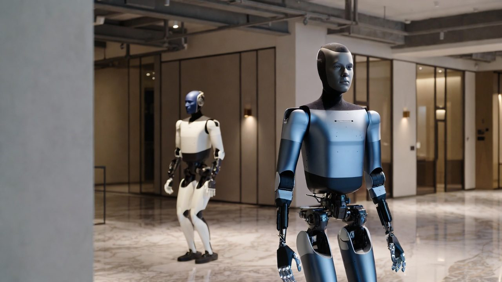
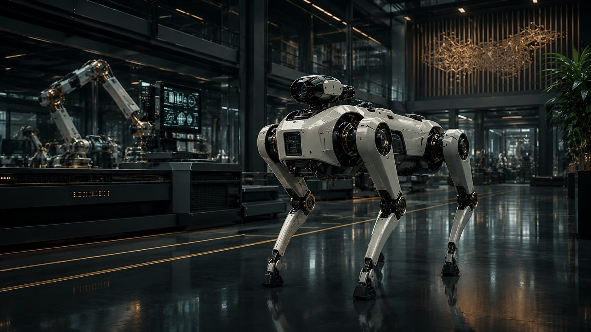
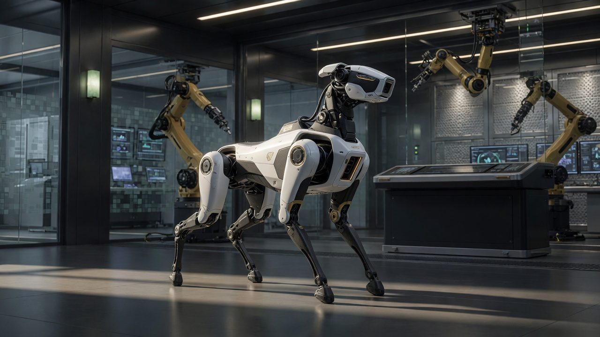
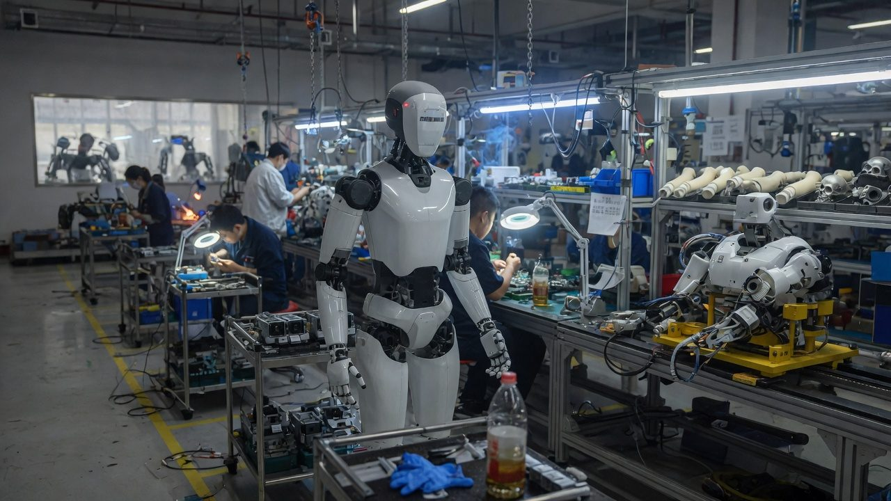

HUMANOIDS
§01 / FIELD-INTELLIGENCE DESK
A Shenzhen-based field-intelligence desk tracking the moment when robotics in China stops being a spectacle and becomes infrastructure
HUMANOIDS · ROBOT DOGS · SERVICE FLEETS · SMART FACTORIES · EMBODIED AI · ROBOTIC INFRASTRUCTURE
§02 / THE FIVE DOMAINS
Not content categories — operational fronts


§03 / LATEST FIELD REPORT
The newest long-form desk note tracks the visible convergence between hospitality robotics, robot-dog presence, assembly-floor adjacency and the Shenzhen hardware moat.
Robotics in China is no longer best understood through product launches alone. The more important story is the accumulation of deployment environments: hotel corridors, managed service surfaces, semi-public showrooms, and manufacturing spaces where machines are no longer a future promise but a present layer.

§04 / INTELLIGENCE PRODUCTS
Weekly written desk on what shipped, deployed and inflected in China’s robotics economy.
Activate subscriptionOn-the-ground deep dives from factories, showrooms, restaurants, hotels and deployment sites.
Request accessDeployment, funding, policy and supply-chain movement tracked as a living signal flow.
View desk tiersCommissioned investigations for funds, OEMs, policy teams and corporate strategy units.
Start an inquiryDirect desk access for institutional clients requiring contextualized robotics intelligence.
Request briefingThe inner ring: closed-door briefings, off-record calls, member access and Shenzhen-grounded conversation.
Request consideration§05 / WHY SHENZHEN · WHY INSIDE
Shenzhen compresses prototyping, sourcing, integration and observation into one geography. The advantage is not just access to robots. It is access to the environments, suppliers and operating surfaces around them.


§06 / FIELD EVIDENCE


§07 / ROBOFRONT CLUB
Robofront Club is the private layer: sharper analysis on robotics, jobs, security, business, society and the future usefulness of human beings.
Private analysis, signal access and future inner-ring briefing layer.
Join Robofront Club§08 / ACCESS INTELLIGENCE
Top-of-funnel access starts with a field briefing. Institutional relationships begin with a direct inquiry.